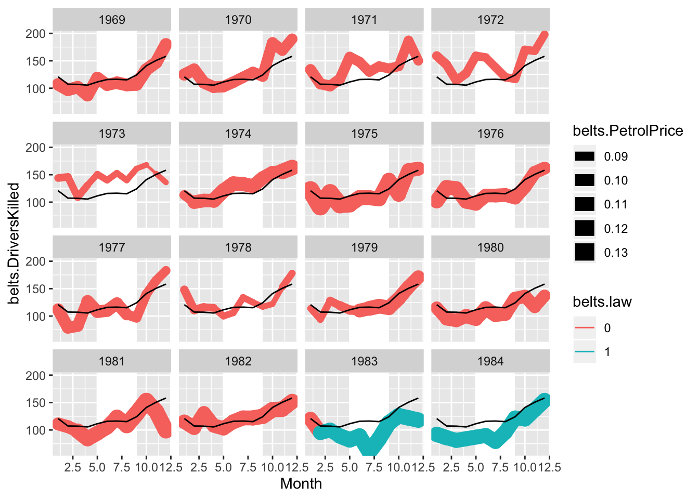
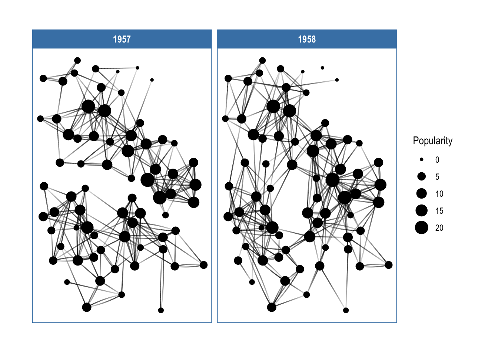

Chapter 5 Comparison–barchart and boxplots
5.1 Deviation chart: Bar above and below zero or average
5.2 Graph considerations for communication: aggregation, abstraction, complexity
library(tidyr)
## Abstraction
# Complexity
mtcars.df = mtcars
mtcars.df = mtcars.df %>% mutate(cyl = as.factor(cyl))
s.mtcars.df = mtcars.df %>% group_by(cyl) %>% summarise(m.hp = mean(hp), se.hp= sd(hp)/n()^.5)
ggplot(data = s.mtcars.df, aes(x = cyl, y = m.hp)) +
geom_bar(stat="identity")
ggplot(data = s.mtcars.df, aes(x = cyl, y = m.hp)) +
geom_bar(stat="identity")+
geom_linerange(aes(ymin=m.hp-2*se.hp, ymax=m.hp+2*se.hp))
ggplot(data = s.mtcars.df, aes(x = cyl, y = m.hp)) +
geom_bar(stat="identity")+
geom_linerange(aes(ymin=m.hp-2*se.hp, ymax=m.hp+2*se.hp))+
geom_point(data = mtcars.df, aes(cyl, hp), position = position_jitter(width = .2, height = 0))
ggplot(data = s.mtcars.df, aes(x = cyl, y = m.hp)) +
geom_point(stat="identity", size = 3)+
geom_linerange(aes(ymin=m.hp-2*se.hp, ymax=m.hp+2*se.hp))+
geom_point(data = mtcars.df, aes(cyl, hp), position = position_jitter(width = .2, height = 0))
ggplot(data = s.mtcars.df, aes(x = cyl, y = m.hp)) +
geom_violin(data= mtcars.df, aes(cyl, hp))+
geom_point(stat="identity", size = 3)+
geom_linerange(aes(ymin=m.hp-2*se.hp, ymax=m.hp+2*se.hp))+
geom_point(data = mtcars.df, aes(cyl, hp),
position = position_jitter(width = .2, height = 0), alpha =.6)
5.3 dotplot and offset range plot
## Set seed and create data
set.seed(999)
df = data_frame(A = runif(12,1,17), B = runif(12, 2, 8))
l.df = gather(df, condition, value)
l.df$condition = as.factor(l.df$condition)
m.l.df = l.df %>% group_by(condition) %>% summarise(m.value = mean(value, na.rm=TRUE),
n= sum(!is.na(value)), sd=sd(value, na.rm=TRUE), sde=sd(value, na.rm=TRUE)/n^.5,
ci= 2*sde)
m.l.df$n.condition = as.numeric(m.l.df$condition)-.05
## Plot with offset for mean and error bar
ggplot()+
geom_dotplot(data = filter(l.df, condition=="A"|condition=="B"),
aes(condition, value), binaxis = "y", stackdir = "up")+
geom_linerange(data = filter(m.l.df, condition=="A"|condition=="B"),
aes(n.condition, ymin=m.value-ci, ymax=m.value+ci), color="grey50") +
geom_point(data = filter(m.l.df, condition=="A"|condition=="B"),
aes(n.condition, y= m.value), shape = 21, size = 4, fill="grey", alpha=.7) +
labs(x="", y="") +
ylim(2, 15)## `stat_bindot()` using `bins = 30`. Pick better value with `binwidth`.
5.4 Compares the empirical and theoretical distribution summary
sum.mtcars.df = mtcars.df%>% group_by(cyl) %>%
summarise(m.hp = mean(hp), sd.hp = sd(hp))
ggplot(mtcars.df) +
geom_boxplot(aes(as.factor(cyl), hp)) +
geom_linerange(data = sum.mtcars.df,
aes(x = as.factor(cyl),
ymin = m.hp + qnorm(.25)*sd.hp, ymax = m.hp + qnorm(.75)*sd.hp),
size = 5, alpha = .25) +
geom_point(data = sum.mtcars.df,
aes(as.factor(cyl), y= m.hp),size = 6, alpha = .33)
5.5 Statistical significance in context
ggplot(data = mtcars.df, aes(x = as.factor(cyl), y = hp)) +
geom_boxplot(colour = "darkgrey") +
geom_point(stat="summary", fun.y = "mean", size = 6, shape = 1) +
geom_pointrange(stat="summary", fun.data = "mean_cl_boot") +
geom_dotplot(binaxis = "y", stackdir = "center", binwidth = 1,
dotsize = 6,alpha = .3, color = "black", fill = "red") +
geom_hline(aes(yintercept = mean(hp)), size = 1.2) 
5.6 Tufte boxplot
library(ggthemes)
ggplot(mtcars, aes(factor(cyl), mpg)) +
geom_tufteboxplot(median.type = "line", whisker.type = 'line', hoffset = 0, width = 4) +
geom_rangeframe() ## Warning: position_dodge requires non-overlapping x
## intervals
## Tufte boxplot
ggplot(mtcars, aes(as.factor(cyl), mpg))+
geom_tufteboxplot()+
labs(title = "ggthemes: Tufte boxplot")
ggplot(mtcars, aes(disp, mpg, color = as.factor(cyl)))+
geom_point()+
geom_rangeframe(size = 2, colour = "grey35")+
labs(title = "ggthemes: Tufte range frame")
## Sina plot
ggplot(mpg, aes(as.factor(cyl), hwy))+
geom_sina(aes(color = as.factor(cyl)),size = 1, alpha =.5) +
geom_tufteboxplot()+
labs(title = "ggforce: sina plot with Tufte boxplot")
## Point range on x and y
library(ggstance)
s.mtcars.df = mtcars %>% group_by(cyl) %>%
summarise(m.hp = mean(hp), se.hp = sd(hp)/n()^.5,
m.mpg = mean(mpg), se.mpg = sd(mpg)/n()^.5)
ggplot(s.mtcars.df, aes(m.hp, m.mpg, colour =as.factor(cyl)))+
geom_pointrangeh(aes(xmin= m.hp-se.hp, xmax = m.hp+se.hp))+
geom_pointrange(aes(ymin= m.mpg-se.mpg, ymax = m.mpg+se.mpg))+
labs(title = "ggstance: horizontal point range")
5.7 Dot plots and reordering
Link to network for same data ## Parallel coordinate plot with similar items highlighted
## [1] "Fiat 128"## [1] "Toyota Corolla"
5.8 Gliphs: Chernof face and radar plots
Show pattern not precision